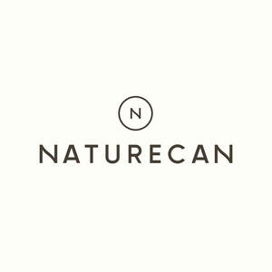
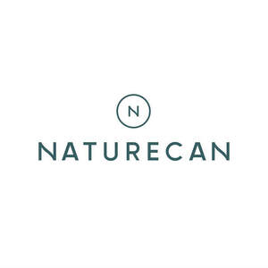

Trade Mark Journal No.2025/043 24 October 2025
UK00004270987 29 September 2025 (3,5,9,10,25,30,31,35,38,41,42,44)
Mark 1

Mark 2

- Class 3
- Cosmetics; toiletries; essential oils; preparations and substances for the conditioning, care and appearance of the skin, body, eyes, teeth, lips, hair and nails; CBD face creams; cosmetics, beauty and hair preparations incorporating CBD, cannabis or cannabis derivatives; moisturisers, sun creams, shampoos, conditioners, face serums, hair serums and facemasks incorporating CBD, cannabis or cannabis derivatives; topical creams, gels, oils, salves, balms and ointment incorporating CBD, cannabis or cannabis derivatives.
- Class 5
- Medical marijuana, cannabis, cannabis oils, cannabis extracts, CBD and cannabis derivatives; dietary and nutritional supplements; vitamins; CBD tinctures; CBD oils; CBD softgel; CBD creams for the treatment of pain; vitamin supplements in drop form, capsule form and liquid form incorporating CBD, cannabis or cannabis derivatives; activated charcoal dietary supplements incorporating CBD, cannabis or cannabis derivatives; dietary supplements and preparations containing CBD, cannabis or cannabis derivatives; medicated supplements for animals; medicated supplements for pets; pharmaceutical preparations containing CBD, cannabis or cannabis derivatives; veterinary preparations; sanitary preparations for medical use; extracts of medicinal plants; plant extracts for pharmaceutical purposes; pharmaceuticals and natural remedies; analgesics; medicinal beverages; herbal beverages for medicinal use; medicated mouth spray.
- Class 9
- Downloadable medical software; downloadable healthcare software; downloadable publications; downloadable written articles; downloadable videos; downloadable software for telemedicine; downloadable software for booking medical appointments; downloadable software for conducting video consultations; downloadable software for managing patient medical records and appointments; recorded media; media content; data processing software; computer programs for use in collecting, managing, analysing, storing, sharing and comparing medical information, patient records and patient data; health monitoring software; downloadable applications; computer software for database management of non-clinical and clinical information.
- Class 10
- Medical devices; medical inhalers; vaporisers for medical use; surgical, medical, dental and veterinary apparatus and instruments; diagnostic, examination and monitoring equipment; orthopaedic articles; suture materials; therapeutic and assistive devices adapted for persons with disabilities; massage apparatus.
- Class 25
- Clothing; footwear; headgear; belts; gloves.
- Class 30
- Coffee, tea, cocoa and artificial coffee; pastries and confectionery; CBD gummies; CBD gums; cookies, chocolate, baked goods and brownies incorporating CBD, cannabis or cannabis derivatives.
- Class 31
- Pet foods; pet foodstuffs; pet foods in the form of chews; pet CBD tinctures; animal food; animal foodstuffs; food products for animals.
- Class 35
- Data processing services in the field of healthcare; business administration and business management services in the field of healthcare; business consultancy and advisory services; computerised management of medical records and files; retail and wholesale services in connection with the sale of cosmetics, toiletries, essential oils, preparations and substances for the conditioning, care and appearance of the skin, body, eyes, teeth, lips, hair, and nails, CBD face creams, cosmetics, beauty and hair preparations incorporating CBD, cannabis or cannabis derivatives, moisturisers, sun creams, shampoos, conditioners, face serums, hair serums and facemasks incorporating CBD, cannabis or cannabis derivatives, topical creams, gels, oils, salves, balms and ointment incorporating CBD, cannabis or cannabis derivatives, medical marijuana, cannabis, cannabis oils, cannabis extracts, CBD and cannabis derivatives, dietary and nutritional supplements, vitamins, CBD tinctures, CBD oils, CBD softgel, CBD creams for the treatment of pain, vitamin supplements in drop form, capsule form and liquid form incorporating CBD, cannabis or cannabis derivatives, activated charcoal dietary supplements incorporating CBD, cannabis or cannabis derivatives, dietary supplements and preparations containing CBD, cannabis or cannabis derivatives, retail and wholesale services in connection with the sale of coffee, tea, cocoa and artificial coffee, pastries and confectionery, CBD gummies, CBD gums, cookies, chocolate, baked goods and brownies incorporating CBD, cannabis or cannabis derivatives; retail and wholesale services in connection with clothing, footwear, headgear, belts, and gloves; retail or wholesale services connected with pharmaceutical, veterinary, and sanitary preparations and medical supplies; billing services; medical cost management; healthcare cost management; administrative services relating to the referral of patients; advisory, information and consultancy services relating to all the aforesaid services.
- Class 38
- Telecommunications services; video conferencing; providing access to telecommunication networks for medical video consultations; providing access to telecommunication networks for telemedicine services; telehealth communication services; webcasting services; transmission of messages, data and content via the Internet and other communications networks; providing online forums and chat rooms for the transmission of messages, comments and multimedia content; messaging services; providing electronic bulletin boards for users to post, search, watch, share, critique, rate and comment on subjects of interest; transfer of electronic files and digital information; transmission of electronic media, multimedia content, videos, movies, pictures, images, text, photos, user-generated content, audio content and information via the Internet and other communications networks; providing access to computer, electronic and online databases; providing online communications links which transfer users to other websites; providing access to computer databases; providing telecommunication facilities that enable the sharing of blogs, photos, videos, podcasts and other audio-visual materials; providing telecommunication facilities that enable the creation and updating of personal electronic web pages featuring user-provided content; telecommunication, internet and wireless messaging services; emergency messaging services; emergency alerts by way of telecommunications, internet and wireless messages; advisory, information and consultancy services in relation to all the aforesaid services.
- Class 41
- Education services; providing of training; health education services; coaching services; medical training and teaching; advice relating to medical and health care training; medical and health care education services; arranging and conducting seminars, tutorials, workshops and lectures; arranging and conducting educational events; publishing, reporting and writing of texts; publishing of medical publications; providing non-downloadable electronic publications; library services; audio, film and video recording services; audio and video editing services; advisory, information and consultancy services relating to all the aforesaid services.
- Class 42
- Software as a service; design, development and maintenance of computer hardware and software; creating, maintaining and hosting web sites; electronic storage of medical records; software as a service, in the fields of healthcare and medicine (including diagnosis); hosting of software and electronic data for others; non-downloadable software for enabling video consultations between doctors and patients; technical support services relating to the use of communication equipment for video consultations; hosting of digital content; hosting of platforms for telemedicine services; providing temporary use of non-downloadable software for enabling medical video consultations; design and development of telemedicine platforms; scientific technological services; scientific design services; technological research services; medical research services; design and development of medical technology and of medical diagnostic apparatus; product development services; providing online non-downloadable software; quality assessment services; quality control services; quality assurance services; information technology services relating to medical diagnostics and healthcare; advisory, information and consultancy services relating to all the aforesaid services.
- Class 44
- Medical services; medical clinic services; medical consultations; medical diagnostic services; medical testing for diagnostic or treatment purposes; medical analysis services for diagnostic or treatment purposes; medical examinations; healthcare services; health assessment services; health screening services; health counselling; provision of information relating to healthcare; remote healthcare services; provision of online medical consultations; online healthcare consultations; professional consultancy relating to health; professional consultancy relating to healthcare; telemedicine services; telemedicine services for medical consultations; remote monitoring of medical data for medical diagnosis and treatment; medical information services provided via the internet; dispensing of pharmaceuticals; dispensing of medical marijuana, cannabis, cannabis oils, cannabis extracts, CBD and cannabis derivatives; preparation of prescriptions in pharmacies; pharmacy services; pharmacy advisory services; pharmaceutical consultation; pharmaceutical advice; provision of pharmaceutical information; rental of medical equipment; advisory, information and consultancy services relating to all the aforesaid services.
Naturecan Ltd
Representative: Womble Bond Dickinson (UK) LLP